我们毅然辞去稳定的工作，只为了这座木瓜海棠四合院
依依短租 2016-3-17
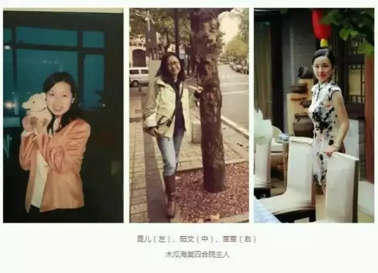
这座四合院，曾是清末民初名妓赛金花的居所，也算是小有名气的历史建筑。
我们三位房东因为同样热爱传统文化而结缘，毅然决然选择辞去各自稳定的工作和生活，聚集在这里。
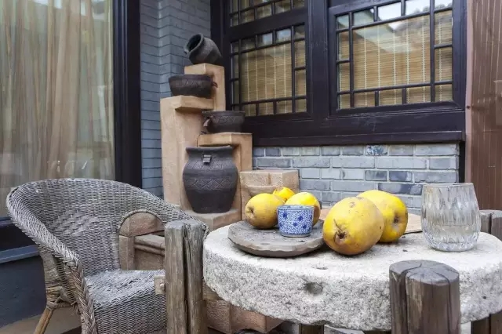
木瓜海棠，安静地坐落在琉璃厂文化街的一个胡同里。琉璃厂算是一个比较小众的地点，这里安静人少。这座四合院，曾是清末民初名妓赛金花的居所，也算是小有名气的历史建筑。
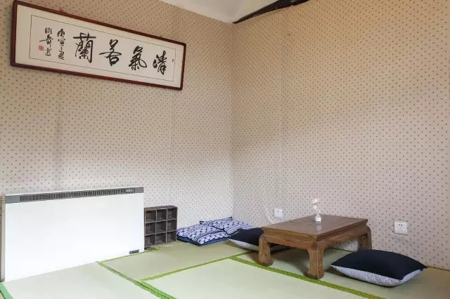
我是赵昆，我和茹文、苗苗三个人因为同样热爱传统文化而结缘，毅然选择辞去各自稳定的工作和生活，聚集在这里。
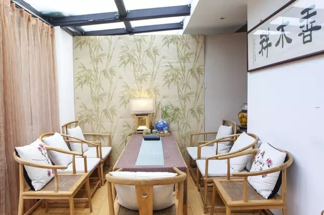
原来的我们，每天过着周而复始的生活，忙碌得没有时间静下来体会美好。所以当我们看到这所四合院的时候就完全喜欢上它了。于是我们三人在2014年将这里租下，努力去改造和完善，让它变成我们理想中的样子，实现我们对小而美的追求。
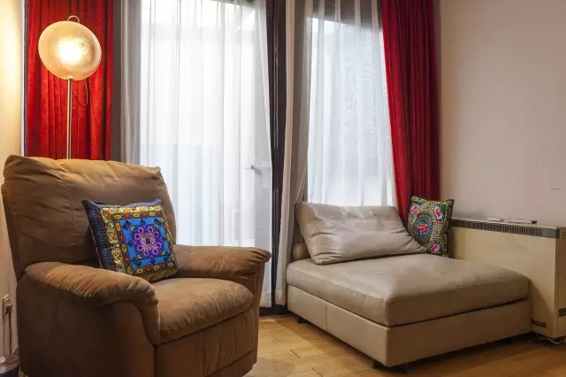
我是北京人，在河北长大，射手座。以前是做企业策划的，现在专职做我的木瓜海棠四合院。茹文是天蝎座，她之前是播音主持人。苗苗是处女座，以前是一名社会工作者。我热爱旅行，喜欢美食。去过云南，四川，新疆和内蒙，除了西藏大部分省份都去过了。
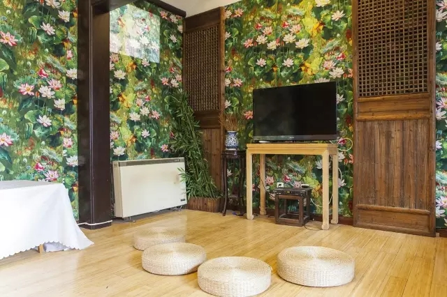
但是四川、云南和新疆这几个地方我估计以后还会再经常去的。大自然的美让人震撼，你会觉得人在大自然中真的好渺小，你会想要去膜拜这个神奇美好的世界。我想就是这一份美激励了我现在正在做的事情。
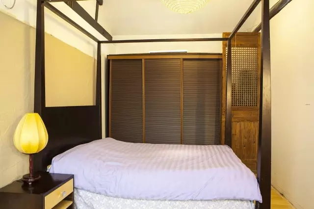
现在的生活虽然不是那么休闲，一天24小时随时都需要回答咨询和处理客户订单，但是可以认识形形色色的房客，我觉得很有意思。
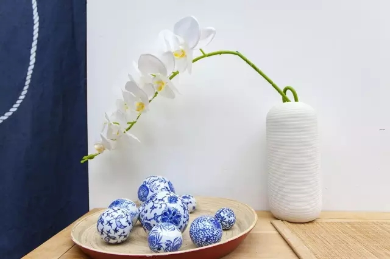
以后看到更有意思的行业也许我又会换种方式生活，毕竟人生变数很大。但是现在，我很想从事这个行业。
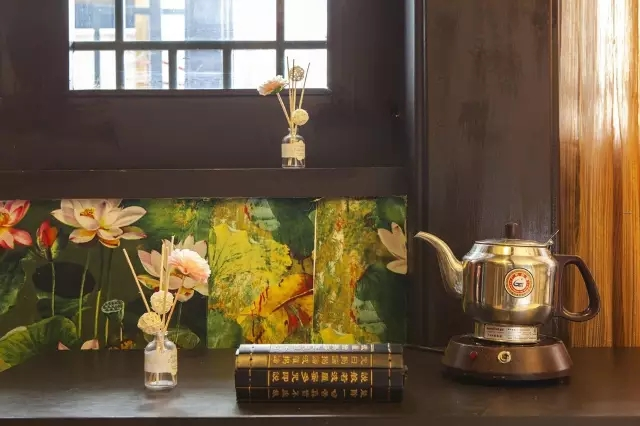
除了提供住宿，平日里我们也会在四合院做相关的文化活动推广传统文化，比如合香，画扇子，弹古琴等等。偶尔也会邀请艺术家朋友过来开办文化讲座，在放映厅播放电影…我们想把木瓜海棠四合院变成一个结合民宿和文化空间于一体的小院。
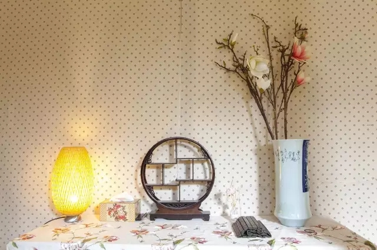
对于我和住客来说，木瓜海棠四合院就是一个小而美的家，不奢华，但是舒适，静谧，可以保留小范围的私密。
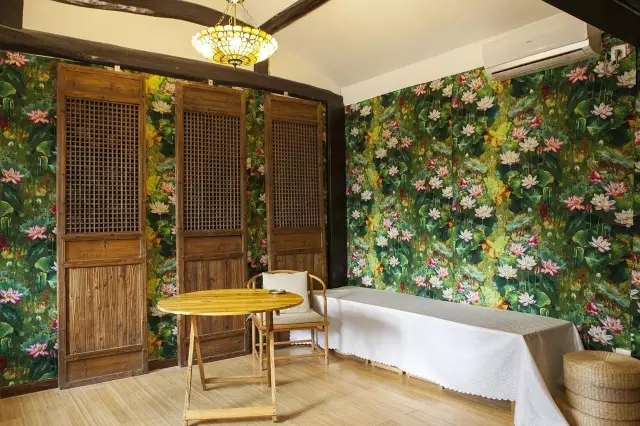
我们保留了门楼、门墩、花坊、房檐、屋脊、门窗等80%的老北京四合院原有的建筑格局，院内共有五个房间，围合出中间一个小小的院落。我们在院子里局部加盖了玻璃内墙，与房顶围合出一个晴天时会洒满阳光的会客室。结合老北京四合院的氛围，房内摆设按照传统的中式风格布置。
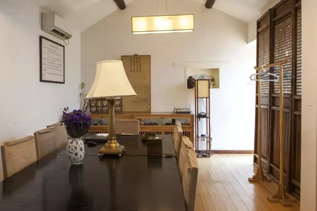
我们三人经常到潘家园旧货市场、高碑店中式家具店等地淘东西，木瓜海棠四合院里的老门板、字匾、影壁、水缸等，都是我们遍寻旧货市场淘回来的。
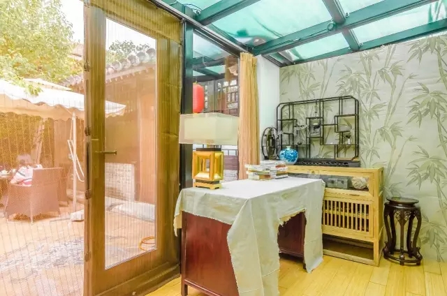
我们曾经接待过一个家庭，来自长春的三姐妹，特地请假带着老父亲来入住，父亲的愿望就是有生之年可以来一次北京。对于他们三姐妹来说，住四合院肯定比一般的经济快捷酒店要贵，甚至超出他们经济承受的范围。但是他们为了完成父亲的心愿，也为了让父亲完整地体会老北京人的生活，还是选择住在木瓜海棠。
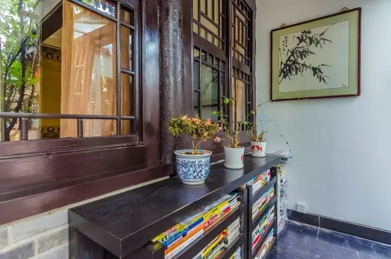
坐在会客室里，你可以听见流水装置发出的潺潺水声，平日里院子还会传来鸟叫声，安静地坐着，有种时间放慢了的的感觉。
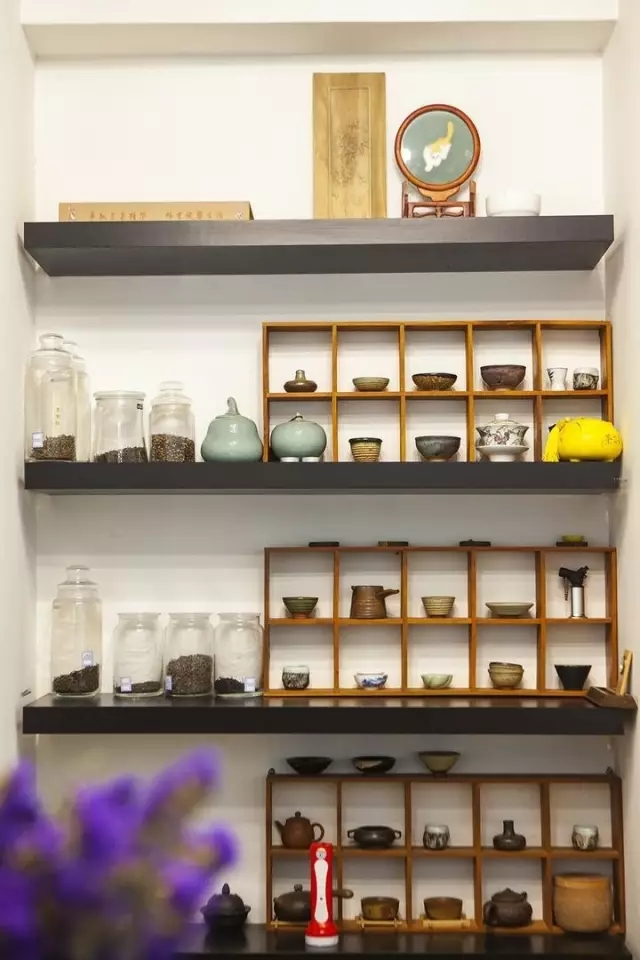
偶尔有风吹过的时候，会飘进来幽幽的果香，那是院子里的木瓜海棠树。
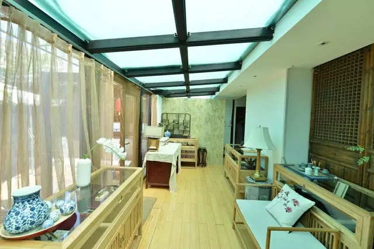
果实成熟时会掉落，我们会把果实放在一旁，有心人会把它们带走。
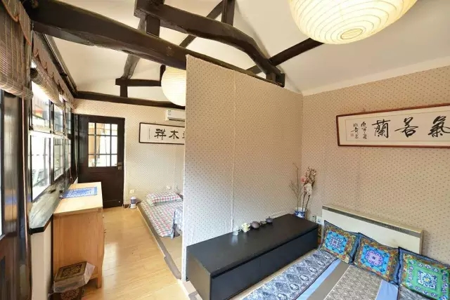
有文化爱好的客人，特地住在木瓜海棠，每天睡到自然醒，然后就散步到琉璃厂文化街看字画……春去秋来，花落果熟，在这里感受悠然的时光，你总会得到你想要的故事。
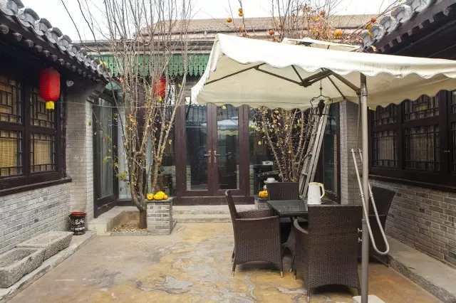